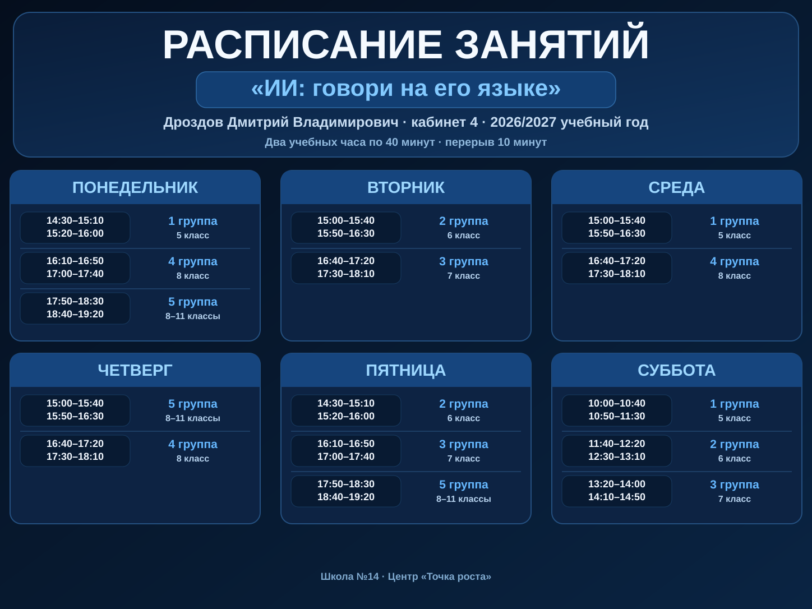

01
ИИ не читает мысли
Он знает только то, что ты передал: цель, ситуацию, материалы и требования.
ИИ становится полезным не тогда, когда ты знаешь «магический промпт», а когда понимаешь, что хочешь получить, что важно сообщить, как улучшить ответ и как проверить результат.
Актуальное расписание курса на 2026/2027 учебный год. Кабинет 4.

Если запомнишь только это — уже сможешь работать с ИИ заметно сильнее.
Он знает только то, что ты передал: цель, ситуацию, материалы и требования.
У задачи есть желаемый результат и понятно, что с ним делать дальше.
Передавай не «побольше текста», а только то, что реально влияет на ответ.
Срок, размер, стиль, формат и запреты отсекают неподходящие варианты.
Не «сделай круто», а конкретные признаки хорошего результата.
Критикуй, уточняй, сравнивай и переделывай. Диалог сильнее одного запроса.
Сильный запрос появляется из понимания задачи, а не из «волшебной формулы».
Факт проверяют источником, код — запуском, картинку — критериями, расчёт — пересчётом.
Хороший результат не лежит в чате: ты используешь его в учёбе, игре, проекте или жизни.
Готовые идеи нужны не для того, чтобы все делали одинаковое. Они помогают быстро стартовать. Если у тебя есть задача интереснее — бери её.
Выбери группу на первом экране — здесь останутся идеи, особенно подходящие твоему возрасту.
Не ищи «идеальный промпт». Открой подходящий ИИ и попробуй решить выбранную задачу своим способом. Не удаляй первую попытку — дальше она понадобится для сравнения.
Напиши ИИ то, что считаешь нужным. Главное — получить первую версию результата.
Не копируй чужой «идеальный запрос», не начинай новый чат после каждой ошибки и не считай первый ответ финалом.
Раскрывай шаг за шагом: короткое знание → пример → применение к своему диалогу.
Ответ может быть интересным, но непонятно, что с ним делать.
У задачи есть желаемый результат и понятное применение.
ИИ не читает мысли. Он получает только то, что ты передал. Но «написать побольше» — не решение.
Нет универсальной фразы, после которой любой ИИ всегда выдаёт идеальный результат. Сильный запрос появляется из хорошо понятой задачи.
Слабый цикл: запрос → ответ → готово.
Сильный цикл: задача → v1 → оценка → уточнение → v2 → проверка → применение.
| Результат | Как проверять |
|---|---|
| Факт / дата | Первоисточник и актуальность |
| Расчёт | Пересчитать другим способом |
| Код | Запустить и протестировать |
| Картинка | Сверить с замыслом и критериями |
| Текст | Сверить с целью и аудиторией |
| План | Проверить, можно ли реально выполнить шаги |
Главный вопрос: «Если ИИ ошибся здесь — что произойдёт?»
Теперь работай уже не по отдельным упражнениям, а целиком. Не начинай новый чат без причины — развивай тот же диалог.
Нет «лучшей нейросети вообще». Есть инструмент, который лучше подходит под конкретную задачу. На первом занятии мы ещё и проверим, что реально открывается на школьной сети.
Зачем: универсальная точка входа: объяснять и разбирать тексты, работать с файлами, помогать с кодом и создавать изображения прямо в чате.
Изображения: в браузерном GigaChat достаточно написать «Создай изображение…». Генерация вызывается встроенной функцией text2image; отдельный Kandinsky-сайт ученику не нужен.
Кодинг: написать, объяснить, найти ошибку, исправить и обсудить решение.
Дополнительно: в экосистеме GigaChat есть генерация 3D-моделей; этот режим исследуем отдельно.
Открыть GigaChat ↗Зачем: универсальная российская альтернатива: вопросы, документы, изображения, редактирование фото и код.
Почему попробовать: сравнить, как две модели решают одну задачу.
Открыть Алису AI ↗Зачем: сложные задачи, анализ, программирование, поиск ошибок и объяснение решений.
Кодинг: один из самых интересных универсальных вариантов для старших.
Открыть DeepSeek ↗Зачем: другой модельный стек: текст, изображения, coding/agent задачи; полезен для сравнения.
Старшим: попробовать цепочку «исследование → структура → визуальный результат».
Открыть Z.ai ↗Зачем: быстро попробовать изображения и короткие видео.
Лимит: смотрим текущий бесплатный счётчик в интерфейсе.
Открыть Шедеврум ↗Зачем: текст, изображения, видео и кодинг в одной экосистеме.
Кодинг: Qwen Coder / Qwen Code особенно интересны старшим.
Важно: бесплатные кредиты сейчас меняются — ориентируемся на счётчик аккаунта.
Открыть Qwen ↗Зачем: если задача должна закончиться коротким роликом.
Открыть Vidu ↗Зачем: более серьёзные эксперименты с движением и image-to-video.
Статус: WOW-инструмент; бесплатные кредиты зависят от текущего режима аккаунта.
Открыть Kling ↗Зачем: описать приложение обычным языком и постепенно довести до работающей версии.
Почему интересно: продолжать проект можно с телефона и компьютера.
Открыть Replit ↗Зачем: быстро собрать сайт или web-app через диалог и увидеть настоящий код.
Free на 27.09.2026: 300K токенов в день, 1M в месяц.
Открыть Bolt ↗Зачем: превратить идею в цифровой продукт без написания всего вручную.
Free на 27.09.2026: 5 build credits в день, до 30 в месяц.
Открыть Lovable ↗Зачем: путь «описание интерфейса → рабочий web-прототип → код».
Открыть v0 ↗Зачем: превратить идею, текст или старую презентацию в структурированный deck.
Free на 27.09.2026: до 10 слайдов за запрос; экспорт PDF, PPTX, PNG и Google Slides.
Открыть Gamma ↗Зачем: превратить сложную мысль в понятную визуальную структуру.
Free на 27.09.2026: 500 AI credits в неделю; Slides доступны и на Free.
Открыть Napkin ↗Зачем: быстро собрать визуальный черновик презентации и затем довести дизайн вручную.
Открыть Canva ↗Необязательные инструменты. Выбери один незнакомый сервис, реши в нём ту же задачу и объясни, чем он отличается.
Не обязательно заканчивать проект сегодня. Но реши, что произойдёт с результатом после чата.
Minecraft: идея → AI-концепт → специальная skin-текстура → импорт → новая версия.
Roblox: принт / эмблема → изображение → Classic T-shirt или decal → использование в Studio.
Обычная картинка персонажа не равна готовому игровому ассету: следующий шаг — привести результат к формату конкретной игры.
Скопируй весь диалог с ИИ — от первого сообщения до последнего ответа — и вставь его сюда. Сайт отправит его одним пакетом: полный исходный текст сохранится отдельным TXT-файлом на Google Диске, а в таблицу попадут метаданные, ссылка и короткое превью.